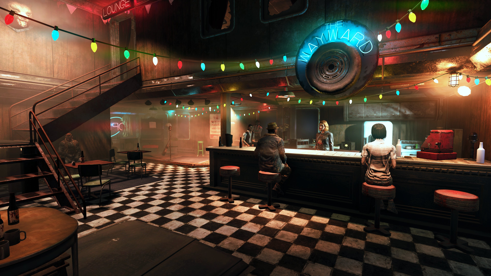

The Wayward (ザ・ウェイワード)
The Wayward（ザ・ウェイワード）は、『Fallout 76』のWastelandersアップデート（2020年4月）で追加された重要なロケーションです。
アパラチアの再建と新たな物語の始まりを象徴する場所であり、多くのプレイヤーにとって最初の「ホーム」となる場所です。
場所
森林地帯の『フラットウッズ』の外れ、監督官のキャンプのちょうど向かい側に位置します（Route 88と86の交差点）。
Vault 76から出て南下するとすぐに到達できるため、新規プレイヤー（レジデント）が最初に訪れる有人施設の一つです。
構造
2階建てのバーで、外観はウェイストランドらしく荒廃していますが味わいがあります。
クエストの進行に伴い、看板にネオンが点灯したり内装が豪華になったりと、プレイヤーの活躍と共に発展していく様子が見られます。
- 1階: 受付エリア、バーカウンター、ボックス席、ステージ（楽器）、トイレ。
- 2階: ダッチェスのオフィス、倉庫、寝室。
主な登場人物
ダッチェス

The Waywardのオーナー兼バーテンダー。
元々はウェルチで薬物売買を取り仕切っていた「女傑」であり、その名の通り肝が据わった人物です。
過去の経歴から裏社会の事情にも詳しく、トラブル解決能力に長けています。
初来店時には「最初の1杯は私のおごり」と振る舞ってくれる気前の良さも持ち合わせています。
ポリー
ダッチェスの相棒であるアサルトロン。
口が悪く皮肉屋ですが、店とダッチェスを守る忠誠心は本物です。
ストーリー序盤でとある事件により頭部だけになってしまいますが、それでも毒舌は止まりません。
モート
常連客のグール。
C.A.M.P.システムに関する知識が豊富な頼れるアドバイザーです。
見た目はグールですが、フサフサの髪を保っている珍しい個体です。
カウンターでいつも飲んだくれて（あるいはテープを聞いて）いますが、アパラチアの地理や事情に通じています。
ソル
The Waywardの常連で自称科学者。
ポリーに気がある様子を見せます。
少し抜けているところがありますが、憎めないキャラクターです。
ベッシー
店の外にあるバラモンの囲いにいるセントリーボット。
なぜか「モー、モー」と牛の鳴き真似をするようにプログラムされています。
ダッチェスの「ペット」的な存在であり、マスコットキャラクターとしても愛されています。
スマイリー
メインクエスト終了後に2階に現れる謎の男。
「金塊」をキャップで売ってくれる貴重なトレーダーです。
非常に愛国心が強く、星条旗モチーフの服を着ています。
週に一度、在庫が補充されます。
役割
プレイヤーにとっては情報のハブであり、休息所です。
Wastelandersのメインクエストラインの起点となる場所であり、ここで「監督官」との再会や、お宝探しの冒険が始まります。
現実世界では？
The Wayward自体は架空の店舗ですが、ウェストバージニアの典型的な「ロードサイド・バー」がモデルになっていると考えられます。
山間の小さな集落にある憩いの場という雰囲気は、現実のアパラチア地方の空気感をよく再現しています。
Fallout 76の世界に「人の温かみ」をもたらした象徴的な場所。
サービス開始当初（2018年）のアパラチアには人間のNPCはおらず、寂しい録音テープと死体ばかりの世界でした。
WastelandersアップデートでThe Waywardができ、ドアを開けて「いらっしゃい」と言われた時の感動は、初期からのプレイヤーにしか分からない特別なものがあります。
登場人物もみんな個性的で、特にダッチェスの「頼れる姉御肌」感と、ポリーのウィットに富んだ会話は最高です。
ベッシーのフィギュアがリアルで発売されるほど人気が出たのも納得ですね。
あと、スマイリーから金塊を買うために毎週月曜日にここを訪れるのが日課になっているレジデントも多いはず。
「よ！大統領！」
> COMMENTS